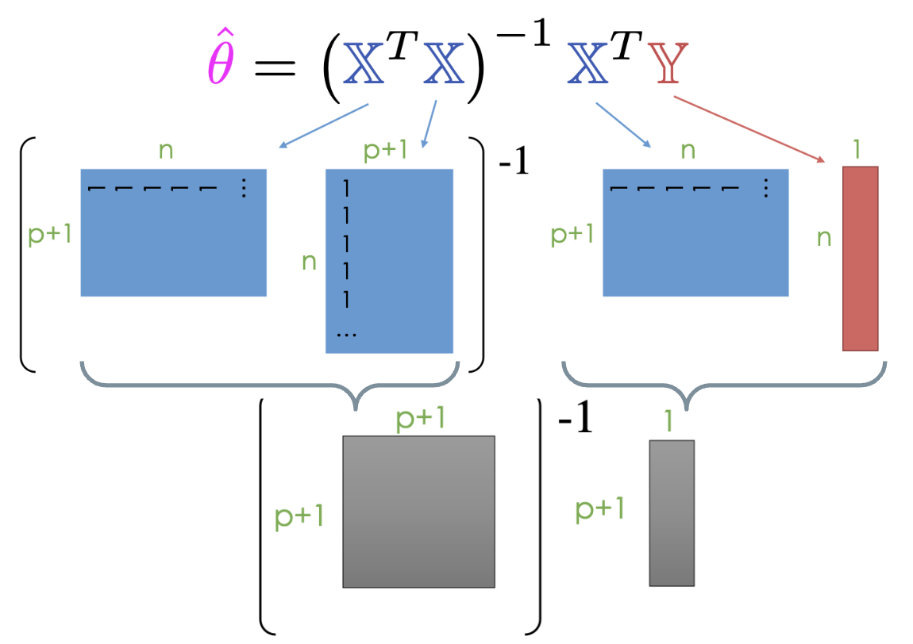
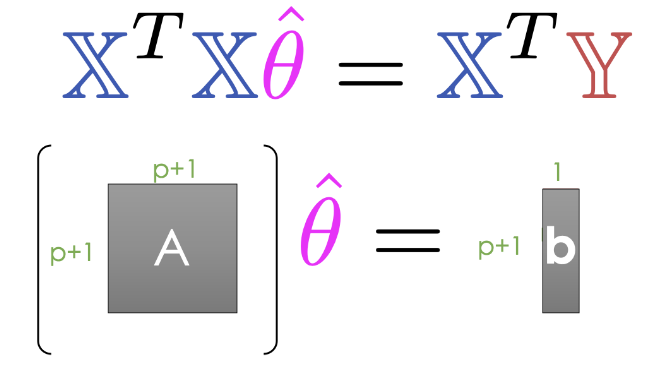

Code
import pandas as pd
nba = pd.read_csv('data/nba18-19.csv', index_col=0)
nba.index.name = None # Drops name of index (players are ordered by rank)We’ve now spent a number of lectures exploring how to build effective models – we introduced the SLR and constant models, selected cost functions to suit our modeling task, and applied transformations to improve the linear fit.
Throughout all of this, we considered models of one feature (\(\hat{y}_i = \theta_0 + \theta_1 x_i\)) or zero features (\(\hat{y}_i = \theta_0\)). As data scientists, we usually have access to datasets containing many features. To make the best models we can, it will be beneficial to consider all of the variables available to us as inputs to a model, rather than just one. In today’s lecture, we’ll introduce multiple linear regression as a framework to incorporate multiple features into a model. We will also learn how to accelerate the modeling process – specifically, we’ll see how linear algebra offers us a powerful set of tools for understanding model performance.
Multiple linear regression is an extension of simple linear regression that adds additional features to the model. The multiple linear regression model takes the form:
\[\hat{y} = \theta_0\:+\:\theta_1x_{1}\:+\:\theta_2 x_{2}\:+\:...\:+\:\theta_p x_{p}\]
Our predicted value of \(y\), \(\hat{y}\), is a linear combination of the single observations (features), \(x_i\), and the parameters, \(\theta_i\).
We can explore this idea further by looking at a dataset containing aggregate per-player data from the 2018-19 NBA season, downloaded from Kaggle.
import pandas as pd
nba = pd.read_csv('data/nba18-19.csv', index_col=0)
nba.index.name = None # Drops name of index (players are ordered by rank)nba.head(5)| Player | Pos | Age | Tm | G | GS | MP | FG | FGA | FG% | ... | FT% | ORB | DRB | TRB | AST | STL | BLK | TOV | PF | PTS | |
|---|---|---|---|---|---|---|---|---|---|---|---|---|---|---|---|---|---|---|---|---|---|
| 1 | Álex Abrines\abrinal01 | SG | 25 | OKC | 31 | 2 | 19.0 | 1.8 | 5.1 | 0.357 | ... | 0.923 | 0.2 | 1.4 | 1.5 | 0.6 | 0.5 | 0.2 | 0.5 | 1.7 | 5.3 |
| 2 | Quincy Acy\acyqu01 | PF | 28 | PHO | 10 | 0 | 12.3 | 0.4 | 1.8 | 0.222 | ... | 0.700 | 0.3 | 2.2 | 2.5 | 0.8 | 0.1 | 0.4 | 0.4 | 2.4 | 1.7 |
| 3 | Jaylen Adams\adamsja01 | PG | 22 | ATL | 34 | 1 | 12.6 | 1.1 | 3.2 | 0.345 | ... | 0.778 | 0.3 | 1.4 | 1.8 | 1.9 | 0.4 | 0.1 | 0.8 | 1.3 | 3.2 |
| 4 | Steven Adams\adamsst01 | C | 25 | OKC | 80 | 80 | 33.4 | 6.0 | 10.1 | 0.595 | ... | 0.500 | 4.9 | 4.6 | 9.5 | 1.6 | 1.5 | 1.0 | 1.7 | 2.6 | 13.9 |
| 5 | Bam Adebayo\adebaba01 | C | 21 | MIA | 82 | 28 | 23.3 | 3.4 | 5.9 | 0.576 | ... | 0.735 | 2.0 | 5.3 | 7.3 | 2.2 | 0.9 | 0.8 | 1.5 | 2.5 | 8.9 |
5 rows × 29 columns
Let’s say we are interested in predicting the number of points (PTS) an athlete will score in a basketball game this season.
Suppose we want to fit a linear model by using some characteristics, or features of a player. Specifically, we’ll focus on field goals, assists, and 3-point attempts.
FG, the average number of (2-point) field goals per gameAST, the average number of assists per game3PA, the average number of 3-point field goals attempted per gamenba[['FG', 'AST', '3PA', 'PTS']].head()| FG | AST | 3PA | PTS | |
|---|---|---|---|---|
| 1 | 1.8 | 0.6 | 4.1 | 5.3 |
| 2 | 0.4 | 0.8 | 1.5 | 1.7 |
| 3 | 1.1 | 1.9 | 2.2 | 3.2 |
| 4 | 6.0 | 1.6 | 0.0 | 13.9 |
| 5 | 3.4 | 2.2 | 0.2 | 8.9 |
Because we are now dealing with many parameter values, we’ve collected them all into a parameter vector with dimensions \((p+1) \times 1\) to keep things tidy. Remember that \(p\) represents the number of features we have (in this case, 3).
\[\theta = \begin{bmatrix} \theta_{0} \\ \theta_{1} \\ \vdots \\ \theta_{p} \end{bmatrix}\]
We are working with two vectors here: a row vector representing the observed data, and a column vector containing the model parameters. The multiple linear regression model is equivalent to the dot (scalar) product of the observation vector and parameter vector.
\[[1,\:x_{1},\:x_{2},\:x_{3},\:...,\:x_{p}] \theta = [1,\:x_{1},\:x_{2},\:x_{3},\:...,\:x_{p}] \begin{bmatrix} \theta_{0} \\ \theta_{1} \\ \vdots \\ \theta_{p} \end{bmatrix} = \theta_0\:+\:\theta_1x_{1}\:+\:\theta_2 x_{2}\:+\:...\:+\:\theta_p x_{p}\]
Notice that we have inserted 1 as the first value in the observation vector. When the dot product is computed, this 1 will be multiplied with \(\theta_0\) to give the intercept of the regression model. We call this 1 entry the intercept or bias term.
Given that we have three features here, we can express this model as: \[\hat{y} = \theta_0\:+\:\theta_1x_{1}\:+\:\theta_2 x_{2}\:+\:\theta_3 x_{3}\]
Our features are represented by \(x_1\) (FG), \(x_2\) (AST), and \(x_3\) (3PA) with each having correpsonding parameters, \(\theta_1\), \(\theta_2\), and \(\theta_3\).
In statistics, this model + loss is called Ordinary Least Squares (OLS). The solution to OLS is the minimizing loss for parameters \(\hat{\theta}\), also called the least squares estimate.
We now know how to generate a single prediction from multiple observed features. Data scientists usually work at scale – that is, they want to build models that can produce many predictions, all at once. The vector notation we introduced above gives us a hint on how we can expedite multiple linear regression. We want to use the tools of linear algebra.
Let’s think about how we can apply what we did above. To accommodate for the fact that we’re considering several feature variables, we’ll adjust our notation slightly. Each observation can now be thought of as a row vector with an entry for each of \(p\) features.

|
To make a prediction from the first observation in the data, we take the dot product of the parameter vector and first observation vector. To make a prediction from the second observation, we would repeat this process to find the dot product of the parameter vector and the second observation vector. If we wanted to find the model predictions for each observation in the dataset, we’d repeat this process for all \(n\) observations in the data.
\[\hat{y}_1 = \theta_0 + \theta_1 x_{11} + \theta_2 x_{12} + ... + \theta_p x_{1p} = [1,\:x_{11},\:x_{12},\:x_{13},\:...,\:x_{1p}] \theta\] \[\hat{y}_2 = \theta_0 + \theta_1 x_{21} + \theta_2 x_{22} + ... + \theta_p x_{2p} = [1,\:x_{21},\:x_{22},\:x_{23},\:...,\:x_{2p}] \theta\] \[\vdots\] \[\hat{y}_n = \theta_0 + \theta_1 x_{n1} + \theta_2 x_{n2} + ... + \theta_p x_{np} = [1,\:x_{n1},\:x_{n2},\:x_{n3},\:...,\:x_{np}] \theta\]
Our observed data is represented by \(n\) row vectors, each with dimension \((p+1)\). We can collect them all into a single matrix, which we call \(\mathbb{X}\).
The matrix \(\mathbb{X}\) is known as the design matrix. It contains all observed data for each of our \(p\) features, where each row corresponds to one observation, and each column corresponds to a feature. It often (but not always) contains an additional column of all ones to represent the intercept or bias column.
To review what is happening in the design matrix: each row represents a single observation. For example, a student in Data 100. Each column represents a feature. For example, the ages of students in Data 100. This convention allows us to easily transfer our previous work in DataFrames over to this new linear algebra perspective.

|
The multiple linear regression model can then be restated in terms of matrices: \[ \Large \mathbb{\hat{Y}} = \mathbb{X} \theta \]
Here, \(\mathbb{\hat{Y}}\) is the prediction vector with \(n\) elements (\(\mathbb{\hat{Y}} \in \mathbb{R}^{n}\)); it contains the prediction made by the model for each of the \(n\) input observations. \(\mathbb{X}\) is the design matrix with dimensions \(\mathbb{X} \in \mathbb{R}^{n \times (p + 1)}\), and \(\theta\) is the parameter vector with dimensions \(\theta \in \mathbb{R}^{(p + 1)}\). Note that our true output \(\mathbb{Y}\) is also a vector with \(n\) elements (\(\mathbb{Y} \in \mathbb{R}^{n}\)).
We now have a new approach to understanding models in terms of vectors and matrices. To accompany this new convention, we should update our understanding of risk functions and model fitting.
Recall our definition of MSE: \[R(\theta) = \frac{1}{n} \sum_{i=1}^n (y_i - \hat{y}_i)^2\]
At its heart, the MSE is a measure of distance – it gives an indication of how “far away” the predictions are from the true values, on average.
We can express the MSE as a squared L2 norm if we rewrite it in terms of the prediction vector, \(\hat{\mathbb{Y}}\), and true target vector, \(\mathbb{Y}\):
\[R(\theta) = \frac{1}{n} \sum_{i=1}^n (y_i - \hat{y}_i)^2 = \frac{1}{n} (||\mathbb{Y} - \hat{\mathbb{Y}}||_2)^2\]
Here, the superscript 2 outside of the parentheses means that we are squaring the norm. If we plug in our linear model \(\hat{\mathbb{Y}} = \mathbb{X} \theta\), we find the MSE cost function in vector notation:
\[R(\theta) = \frac{1}{n} (||\mathbb{Y} - \mathbb{X} \theta||_2)^2\]
Under the linear algebra perspective, our new task is to fit the optimal parameter vector \(\theta\) such that the cost function is minimized. Equivalently, we wish to minimize the norm \[||\mathbb{Y} - \mathbb{X} \theta||_2 = ||\mathbb{Y} - \hat{\mathbb{Y}}||_2.\]
We can restate this goal in two ways:
There are several equivalent terms in the context of regression. The ones we use most often for this course are bolded.
Up until now, we’ve mostly thought of our model as a scalar product between horizontally stacked observations and the parameter vector. We can also think of \(\hat{\mathbb{Y}}\) as a linear combination of feature vectors, scaled by the parameters. We use the notation \(\mathbb{X}_{:, i}\) to denote the \(i\)th column of the design matrix. You can think of this as following the same convention as used when calling .iloc and .loc. “:” means that we are taking all entries in the \(i\)th column.

|
\[ \hat{\mathbb{Y}} = \theta_0 \begin{bmatrix} 1 \\ 1 \\ \vdots \\ 1 \end{bmatrix} + \theta_1 \begin{bmatrix} x_{11} \\ x_{21} \\ \vdots \\ x_{n1} \end{bmatrix} + \ldots + \theta_p \begin{bmatrix} x_{1p} \\ x_{2p} \\ \vdots \\ x_{np} \end{bmatrix} = \theta_0 \mathbb{X}_{:,\:1} + \theta_1 \mathbb{X}_{:,\:2} + \ldots + \theta_p \mathbb{X}_{:,\:p+1}\]
This new approach is useful because it allows us to take advantage of the properties of linear combinations.
Because the prediction vector, \(\hat{\mathbb{Y}} = \mathbb{X} \theta\), is a linear combination of the columns of \(\mathbb{X}\), we know that the predictions are contained in the span of \(\mathbb{X}\). That is, we know that \(\mathbb{\hat{Y}} \in \text{Span}(\mathbb{X})\).
The diagram below is a simplified view of \(\text{Span}(\mathbb{X})\), assuming that each column of \(\mathbb{X}\) has length \(n\). Notice that the columns of \(\mathbb{X}\) define a subspace of \(\mathbb{R}^n\), where each point in the subspace can be reached by a linear combination of \(\mathbb{X}\)’s columns. The prediction vector \(\mathbb{\hat{Y}}\) lies somewhere in this subspace.

|
Examining this diagram, we find a problem. The vector of true values, \(\mathbb{Y}\), could theoretically lie anywhere in \(\mathbb{R}^n\) space – its exact location depends on the data we collect out in the real world. However, our multiple linear regression model can only make predictions in the subspace of \(\mathbb{R}^n\) spanned by \(\mathbb{X}\). Remember the model fitting goal we established in the previous section: we want to generate predictions such that the distance between the vector of true values, \(\mathbb{Y}\), and the vector of predicted values, \(\mathbb{\hat{Y}}\), is minimized. This means that we want \(\mathbb{\hat{Y}}\) to be the vector in \(\text{Span}(\mathbb{X})\) that is closest to \(\mathbb{Y}\).
Another way of rephrasing this goal is to say that we wish to minimize the length of the residual vector \(e\), as measured by its \(L_2\) norm.

|
The vector in \(\text{Span}(\mathbb{X})\) that is closest to \(\mathbb{Y}\) is always the orthogonal projection of \(\mathbb{Y}\) onto \(\text{Span}(\mathbb{X}).\) Thus, we should choose the parameter vector \(\theta\) that makes the residual vector orthogonal to any vector in \(\text{Span}(\mathbb{X})\). You can visualize this as the vector created by dropping a perpendicular line from \(\mathbb{Y}\) onto the span of \(\mathbb{X}\).
Remember our goal is to find \(\hat{\theta}\) such that we minimize the objective function \(R(\theta)\). Equivalently, this is the \(\hat{\theta}\) such that the residual vector \(e = \mathbb{Y} - \mathbb{X} \hat{\theta}\) is orthogonal to \(\text{Span}(\mathbb{X})\).
Looking at the definition of orthogonality of \(\mathbb{Y} - \mathbb{X}\hat{\theta}\) to \(span(\mathbb{X})\), we can write: \[\mathbb{X}^T (\mathbb{Y} - \mathbb{X}\hat{\theta}) = \vec{0}\]
Let’s then rearrange the terms: \[\mathbb{X}^T \mathbb{Y} - \mathbb{X}^T \mathbb{X} \hat{\theta} = \vec{0}\]
And finally, we end up with the normal equation: \[\mathbb{X}^T \mathbb{X} \hat{\theta} = \mathbb{X}^T \mathbb{Y}\]
Any vector \(\theta\) that minimizes MSE on a dataset must satisfy this equation.
If \(\mathbb{X}^T \mathbb{X}\) is invertible, we can conclude: \[\hat{\theta} = (\mathbb{X}^T \mathbb{X})^{-1} \mathbb{X}^T \mathbb{Y}\]
This is called the least squares estimate of \(\theta\): it is the value of \(\theta\) that minimizes the squared loss.
Note that the least squares estimate was derived under the assumption that \(\mathbb{X}^T \mathbb{X}\) is invertible. This condition holds true when \(\mathbb{X}^T \mathbb{X}\) is full column rank, which, in turn, happens when \(\mathbb{X}\) is full column rank. We will get to the proof for why \(\mathbb{X}\) needs to be full column rank in the OLS Properties section.
When using the optimal parameter vector, our residuals \(e = \mathbb{Y} - \hat{\mathbb{Y}}\) are orthogonal to \(span(\mathbb{X})\).
\[\mathbb{X}^Te = 0 \]
For all linear models with an intercept term, the sum of residuals is zero.
\[\sum_i^n e_i = 0\]
To summarize:
| Model | Estimate | Unique? | |
|---|---|---|---|
| Constant Model + MSE | \(\hat{y} = \theta_0\) | \(\hat{\theta}_0 = mean(y) = \bar{y}\) | Yes. Any set of values has a unique mean. |
| Constant Model + MAE | \(\hat{y} = \theta_0\) | \(\hat{\theta}_0 = median(y)\) | Yes, if odd. No, if even. Return the average of the middle 2 values. |
| Simple Linear Regression + MSE | \(\hat{y} = \theta_0 + \theta_1x\) | \(\hat{\theta}_0 = \bar{y} - \hat{\theta}_1\bar{x}\) \(\hat{\theta}_1 = r\frac{\sigma_y}{\sigma_x}\) | Yes. Any set of non-constant* values has a unique mean, SD, and correlation coefficient. |
| OLS (Linear Model + MSE) | \(\mathbb{\hat{Y}} = \mathbb{X}\mathbb{\theta}\) | \(\hat{\theta} = (\mathbb{X}^T\mathbb{X})^{-1}\mathbb{X}^T\mathbb{Y}\) | Yes, if \(\mathbb{X}\) is full column rank (all columns are linearly independent, # of datapoints >>> # of features). |
In most settings, the number of observations (n) is much greater than the number of features (p).
|  |
In practice, instead of directly inverting matrices, we can use more efficient numerical solvers to directly solve a system of linear equations using the normal equation shown below. Note that at least one solution always exists because intuitively, we can always draw a line of best fit for a given set of data, but there may be multiple lines that are “equally good”. (Formal proof is beyond this course.)
|  |
The Least Squares estimate \(\hat{\theta}\) is unique if and only if \(\mathbb{X}\) is full column rank.
Therefore, if \(\mathbb{X}\) is not full column rank, we will not have unique estimates. This can happen for two major reasons.
Our geometric view of multiple linear regression has taken us far! We have identified the optimal set of parameter values to minimize MSE in a model of multiple features. Now, we want to understand how well our fitted model performs.
One measure of model performance is the Root Mean Squared Error, or RMSE. The RMSE is simply the square root of MSE. Taking the square root converts the value back into the original, non-squared units of \(y_i\), which is useful for understanding the model’s performance. A low RMSE indicates more “accurate” predictions – that there is a lower average loss across the dataset.
\[\text{RMSE} = \sqrt{\frac{1}{n} \sum_{i=1}^n (y_i - \hat{y}_i)^2}\]
When working with SLR, we generated plots of the residuals against a single feature to understand the behavior of residuals. When working with several features in multiple linear regression, it no longer makes sense to consider a single feature in our residual plots. Instead, multiple linear regression is evaluated by making plots of the residuals against the predicted values. As was the case with SLR, a multiple linear model performs well if its residual plot shows no patterns.
For SLR, we used the correlation coefficient to capture the association between the target variable and a single feature variable. In a multiple linear model setting, we will need a performance metric that can account for multiple features at once. Multiple \(R^2\), also called the coefficient of determination, is the proportion of variance of our fitted values (predictions) \(\hat{y}_i\) to our true values \(y_i\). It ranges from 0 to 1 and is effectively the proportion of variance in the observations that the model explains.
\[R^2 = \frac{\text{variance of } \hat{y}_i}{\text{variance of } y_i} = \frac{\sigma^2_{\hat{y}}}{\sigma^2_y}\]
Note that for OLS with an intercept term, for example \(\hat{y} = \theta_0 + \theta_1x_1 + \theta_2x_2 + \cdots + \theta_px_p\), \(R^2\) is equal to the square of the correlation between \(y\) and \(\hat{y}\). On the other hand for SLR, \(R^2\) is equal to \(r^2\), the correlation between \(x\) and \(y\). The proof of these last two properties is out of scope for this course.
Additionally, as we add more features, our fitted values tend to become closer and closer to our actual values. Thus, \(R^2\) increases.
Adding more features doesn’t always mean our model is better though! We’ll see why later in the course.